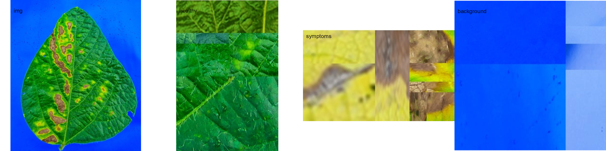
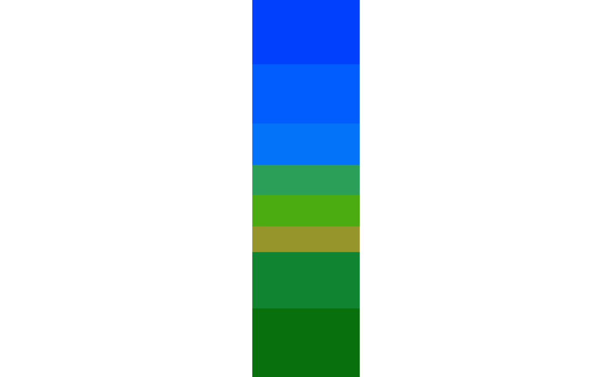
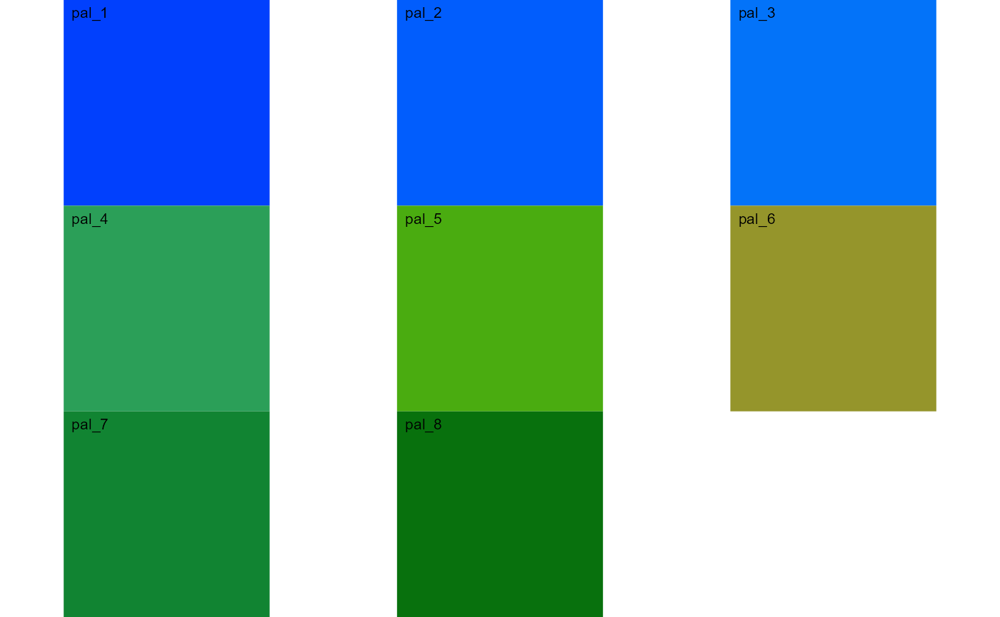
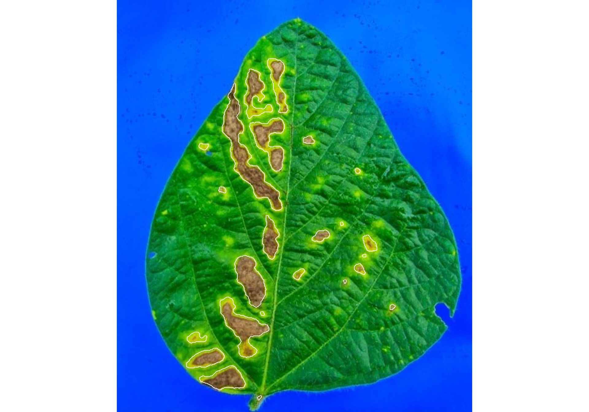
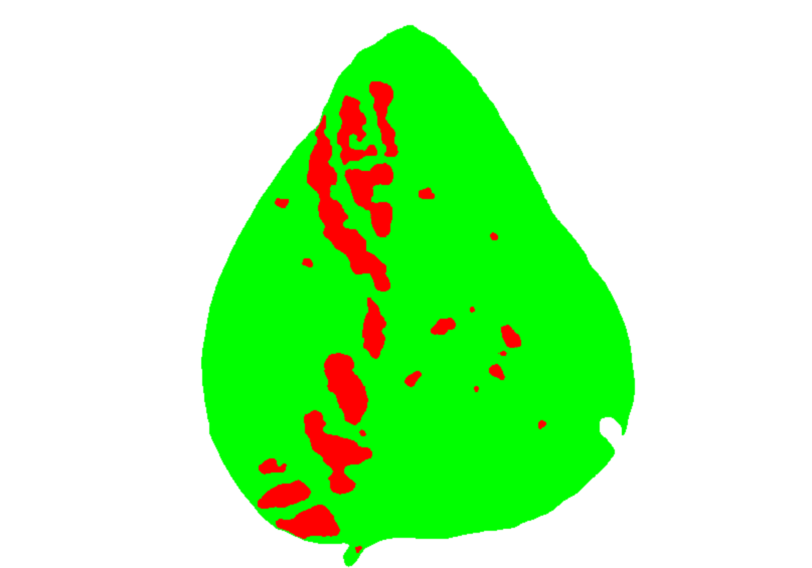
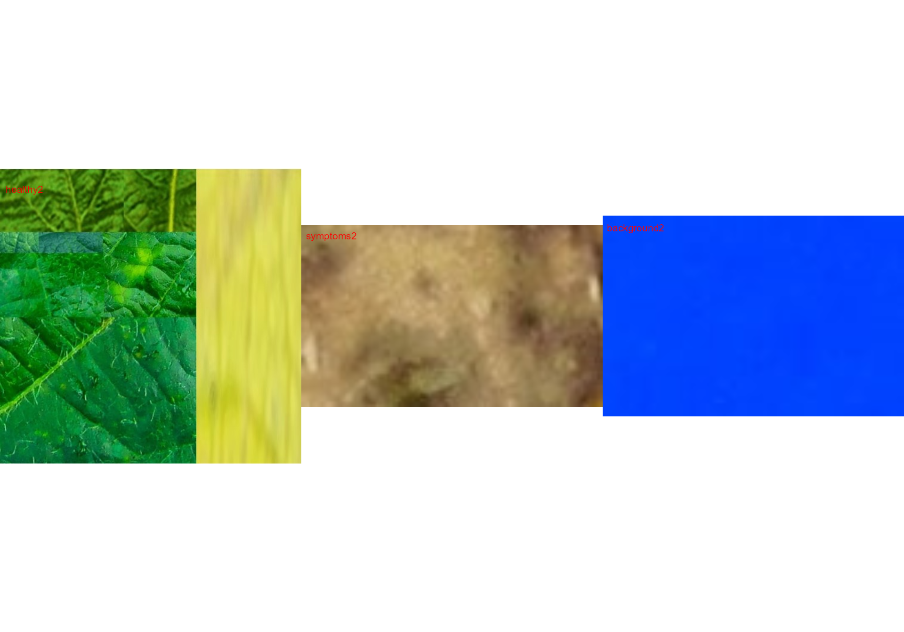

Phytopatometry in R with the package pliman
Tiago Olivoto
2023-10-22
Source:vignettes/phytopatometry.Rmd
phytopatometry.RmdSingle images
library(pliman)
#> |==========================================================|
#> | Tools for Plant Image Analysis (pliman 2.1.0) |
#> | Author: Tiago Olivoto |
#> | Type `citation('pliman')` to know how to cite pliman |
#> | Visit 'http://bit.ly/pkg_pliman' for a complete tutorial |
#> |==========================================================|
# set the path directory
path_soy <- "https://raw.githubusercontent.com/TiagoOlivoto/images/master/pliman"
# import images
img <- image_import("leaf.jpg", path = path_soy)
healthy <- image_import("healthy.jpg", path = path_soy)
symptoms <- image_import("sympt.jpg", path = path_soy)
background <- image_import("back.jpg", path = path_soy)
image_combine(img, healthy, symptoms, background, ncol = 4)
Image palettes
Sample palettes can be created by manually sampling small areas of
representative images and producing a composite image that represents
each of the desired classes (background, healthy, and symptomatic
tissues). Another approach is to use the image_palette()
function to generate sample color palettes.
pals <- image_palette(img, npal = 8)
image_combine(pals$palette_list)
# to extract the color palettes, use the object
plot(pals$palette_list[[1]])
# default settings
res <-
measure_disease(img = img,
img_healthy = healthy,
img_symptoms = symptoms,
img_background = background)
res$severity
#> healthy symptomatic
#> 1 89.36756 10.63244Alternatively, users can create a mask instead of displaying the original image.
# create a personalized mask
res2 <-
measure_disease(img = img,
img_healthy = healthy,
img_symptoms = symptoms,
img_background = background,
show_original = FALSE, # create a mask
show_contour = FALSE, # hide the contour line
col_background = "white", # default
col_lesions = "red", # default
col_leaf = "green") # default
res2$severity
#> healthy symptomatic
#> 1 89.18203 10.81797Variations in image palettes
The results may vary depending on how the palettes are chosen and are subjective due to the researcher’s experience. In the following example, I present a second variation in the color palettes, where only the necrotic area is assumed to be the diseased tissue. Therefore, the symptomatic area will be smaller than in the previous example.
# import images
healthy2 <- image_import("healthy2.jpg", path = path_soy)
symptoms2 <- image_import("sympt2.jpg", path = path_soy)
background2 <- image_import("back2.jpg", path = path_soy)
image_combine(healthy2, symptoms2, background2, ncol = 3)
res3 <-
measure_disease(img = img,
img_healthy = healthy2,
img_symptoms = symptoms2,
img_background = background2)
res3$severity
#> healthy symptomatic
#> 1 93.62367 6.376329Lesion features
res4 <-
measure_disease(img = img,
img_healthy = healthy,
img_symptoms = symptoms,
img_background = background,
show_features = TRUE,
marker = "area")
res4$shape
#> id mx my area perimeter radius_mean radius_min radius_max
#> 1 1 221.2854 113.5300 1051 197.61017 22.542426 0.4574999 39.195089
#> 2 2 189.7655 129.4557 1347 255.30866 20.536491 1.9179031 39.047473
#> 3 3 177.9097 213.2194 3756 479.44574 50.429324 1.0172814 94.833036
#> 4 4 209.8348 193.3616 1847 254.82338 24.054797 0.8294188 42.394976
#> 5 5 263.3015 192.5685 144 46.07107 6.432979 4.3560657 8.710006
#> 6 6 119.5133 201.4716 106 37.97056 5.401209 3.2145054 7.011175
#> 8 8 145.0949 260.5257 77 31.72792 4.512716 3.1588917 5.890903
#> 9 9 210.9025 328.1284 937 150.05382 18.551319 7.4968160 30.607324
#> 11 11 280.3690 323.9892 277 66.35534 9.158113 5.3467341 13.132584
#> 12 12 347.0191 334.7505 301 67.52691 9.572126 5.3572461 12.988460
#> 15 15 183.7555 384.4845 1889 195.50967 25.075741 13.1297926 38.817412
#> 16 16 333.3873 369.2890 161 48.45584 6.871599 4.4326658 9.669833
#> 17 17 249.6167 376.2756 152 48.87006 6.729158 3.3320576 9.624262
#> 19 19 172.3420 449.2575 2279 281.59293 28.762923 13.1316755 47.596995
#> 23 23 109.1753 464.1340 278 76.69848 9.163249 3.4697057 13.849439
#> 24 24 122.6784 492.3605 957 134.39697 18.159020 9.9418772 28.187512
#> 25 25 149.1242 520.1696 1299 163.95332 21.132646 11.0804543 32.776744
#> radius_sd diam_mean diam_min diam_max maj_axis min_axis length
#> 1 11.1940055 45.084852 0.9149997 78.39018 24.256153 6.662562 77.18840
#> 2 9.0513289 41.072981 3.8358061 78.09495 19.657618 10.811397 66.41748
#> 3 25.4996489 100.858648 2.0345627 189.66607 54.980195 12.998467 185.15668
#> 4 10.1985631 48.109595 1.6588377 84.78995 22.418395 13.401467 74.44851
#> 5 1.2327550 12.865958 8.7121315 17.42001 5.395079 3.709751 16.00669
#> 6 1.0981030 10.802418 6.4290108 14.02235 4.348269 3.381714 13.03497
#> 8 0.7570407 9.025432 6.3177834 11.78181 3.602634 2.817621 11.04797
#> 9 6.4909295 37.102638 14.9936320 61.21465 18.026385 7.811137 60.30694
#> 11 2.1249370 18.316226 10.6934682 26.26517 7.999669 4.930767 25.11932
#> 12 2.0917918 19.144253 10.7144923 25.97692 8.298294 5.202436 25.60521
#> 15 7.5163246 50.151482 26.2595852 77.63482 23.128597 12.248413 73.99521
#> 16 1.4614520 13.743197 8.8653316 19.33967 5.796511 3.962867 17.73659
#> 17 1.7310964 13.458317 6.6641152 19.24852 5.976655 3.533626 18.37484
#> 19 9.8848790 57.525846 26.2633511 95.19399 26.433541 15.029328 87.49540
#> 23 2.9122587 18.326497 6.9394113 27.69888 8.354319 4.746453 27.01285
#> 24 5.5924775 36.318041 19.8837544 56.37502 17.082987 8.302549 54.39783
#> 25 6.0669818 42.265293 22.1609087 65.55349 19.277370 10.560426 62.95761
#> width
#> 1 22.629530
#> 2 37.692131
#> 3 45.978766
#> 4 46.442456
#> 5 10.914290
#> 6 9.824116
#> 8 8.595533
#> 9 23.672188
#> 11 14.846347
#> 12 15.189243
#> 15 34.924170
#> 16 12.080600
#> 17 10.717088
#> 19 54.713490
#> 23 14.982384
#> 24 22.794774
#> 25 32.894039
res4$statistics
#> stat value
#> 1 n 17.0000
#> 2 min_area 77.0000
#> 3 mean_area 991.6471
#> 4 max_area 3756.0000
#> 5 sd_area 1009.1980
#> 6 sum_area 16858.0000Interactive disease measurements
An alternative approach to measuring disease percentage is available
through the measure_disease_iter() function. This function
offers an interactive interface that empowers users to manually select
sample colors directly from the image. By doing so, it provides a highly
customizable analysis method.
One advantage of using measure_disease_iter() is the
ability to utilize the “mapview” viewer, which enhances the analysis
process by offering zoom-in options. This feature allows users to
closely examine specific areas of the image, enabling detailed
inspection and accurate disease measurement.
img <- image_pliman("sev_leaf.jpg", plot = TRUE)
measure_disease_iter(img, viewer = "mapview")